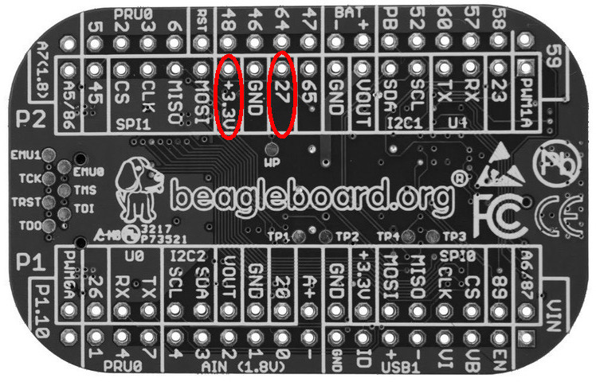
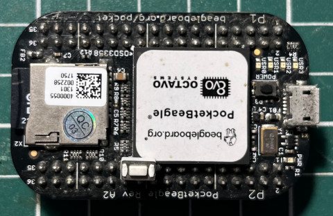

timer_handler: 取得按鍵狀態並且設定到USR3 LED
ldd_exit: 釋放GPIO以及Timer資源
完成


由於PocketBeagle板上的Power按鍵是透過PMIC連接，因此，需要連接另一個按鍵來使用，司徒選定27腳位，如下圖：


1. gpio_request() 2. gpio_direction_input() 3. gpio_get_value() 4. gpio_free()
main.c
#include <linux/init.h>
#include <linux/device.h>
#include <linux/module.h>
#include <linux/delay.h>
#include <linux/kernel.h>
#include <linux/errno.h>
#include <linux/mm.h>
#include <linux/gpio.h>
MODULE_LICENSE("GPL");
MODULE_AUTHOR("Steward Fu");
MODULE_DESCRIPTION("Linux Driver");
#define BUTTON 27
#define USR3_LED ((32 * 1) + 24)
static int period = 100;
static struct timer_list timer = {0};
void timer_handler(unsigned long unused)
{
int state = 0;
state = gpio_get_value(BUTTON);
gpio_set_value(USR3_LED, state);
mod_timer(&timer, jiffies + msecs_to_jiffies(period));
}
int ldd_init(void)
{
gpio_request(USR3_LED, "USR3");
gpio_direction_output(USR3_LED, 1);
gpio_request(BUTTON, "BTN");
gpio_direction_input(BUTTON);
setup_timer(&timer, timer_handler, 0);
mod_timer(&timer, jiffies + msecs_to_jiffies(period));
return 0;
}
void ldd_exit(void)
{
del_timer(&timer);
gpio_free(BUTTON);
gpio_free(USR3_LED);
}
module_init(ldd_init);
module_exit(ldd_exit);
ldd_init: 初始化GPIO以及Timer
timer_handler: 取得按鍵狀態並且設定到USR3 LED
ldd_exit: 釋放GPIO以及Timer資源
完成